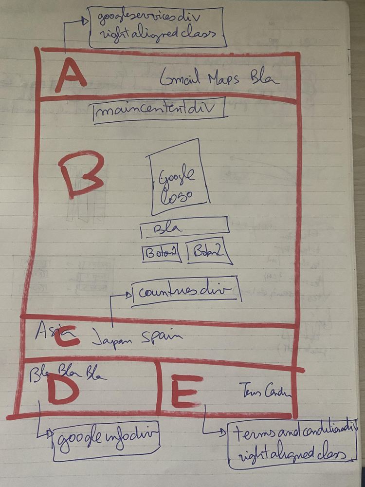

-
Create an schematic of what you want to create. Use paper or any similar media.
Write on it the outline of the text elements, the images, menus, links, etc. that
you want it to have. For example, you may want to create a webpage that imitates
the main Google webpage, like this:
-
Divide the above schematic into rectangular areas of a grid; let's call them grid-areas. To each grid-area,
assign two items and write them on the paper: an uppercase letter (A, B, C, ...) and a word ending in the suffix
div with semantic meaning for that area (topbardiv, weatherbardiv, menudiv, maincontentdiv, footerdiv, etc.)
For example, we may create something like this to imitate the Google webpage.

-
Write the uppercase letters in a series of rows, mimicking the design of the webpage. Some rows
may be shorter than other; if that is the case, write as many letters as needed in order to make
all lines the same length, using in each line the last letter that appears in that line.
For example
A -> A A
B -> B B
C -> C C
D E -> D E
-
Decide which of the rows in the above design will stretch to fill the entire webpage if there
is not enough information to fill the entire screen. In our example, that will be the "C C" row.
-
If two or more grid-areas identified in the previous step share some kind of similarity that deviates
from the default (which is white background and text aligned to the left), give that similarity a
word ending in the suffix "class", and write that word in its grid-area.
For example, if two (or more) of the
grid-areas have text that is aligned to the right instead of to the left, assign them
the name "rightalignedclass". Or, if two (or more) areas ahve a background color that is green,
assign them the name "greenbackgroundclass"; etc. Some grid-areas will end up without
any of these "class" words because they do not have any special characteristic, some
will have one, and some may have more than one. For example, a grid-area may have a green background
and text aligned to the right, so it ends up with the words "rigthalignedclass" and
"greenbackgroundclass"; while other grid-area that only has a green background ends up with
only "greenbackgroundclass".
-
Create a folder for the webpage and give it a descriptive name.
-
Choose a name for the html file and another for the css file.
-
Create the html file and css files in the editor.
-
Write inside the html file the lines corresponding to: doctype, and the lines with the opening anc
closing html tags. Inside the html tags, write the head opening and closing tags followed by the body
opening and closing tags.
-
Inside the head tag, write the title inside the title tags and the link tag with the reference to the css file.
-
Inside the body tag, write as many div tags as grid-areas you have in the paper design. Write one div after the other, in the
order that you have in the paper design. Inside each opening div tag, put an id equal to the word that ends in the suffix div that
you assigned to that grid-area. If you assigned words ending in class to a grid-area, assign as many class attributes as you wrote.
For example:
...
<div id="googleservicesdiv" class="rightalignedclass">
</div>
<div id="maincontentdiv">
</div>
<div id="countrydiv">
</div>
<div id="googleinfodiv">
</div>
<div id="termsandconditionsdiv" class="rightalignedclass">
</div>
...
-
In the css file, write the body element with the "display: grid;" "height: 100vh"
-
In the css file, write the body element with the "grid-template-rows" with one word for each row in the paper design. Use the
word "1fr" for the row that will stretch the entire screen, and "auto" for the rest. In our example, "grid-template-rows: auto 1fr auto auto;"
-
In the css file, write the body element with the "grid-template-areas" with the series of rows of our design.
In our example:
grid-template-areas: "A A"
"B B"
"C C"
"D E";
-
In the CSS file, write the id of each grid-area with a # symbol as prefix, and assign it its corresponding uppercase letter with the grid-area attribute.
...
#googleservicesdiv {
grid-area: A;
}
#maincontentdiv {
grid-area: B;
}
#countrydiv {
grid-area: C;
}
#aboutgooglediv {
grid-area: D;
}
#termsandconditionsdiv {
grid-area: E;
}
-
In the CSS file, write the class of each grid-area with a . (dot) symbol as prefix and write whatever conditions we want to apply to it:
...
.rightalignedclass {
text-align: right;
}
.weirdcolorsclass {
color: green;
background-color: yellow;
}
-
TO BE COMPLETED